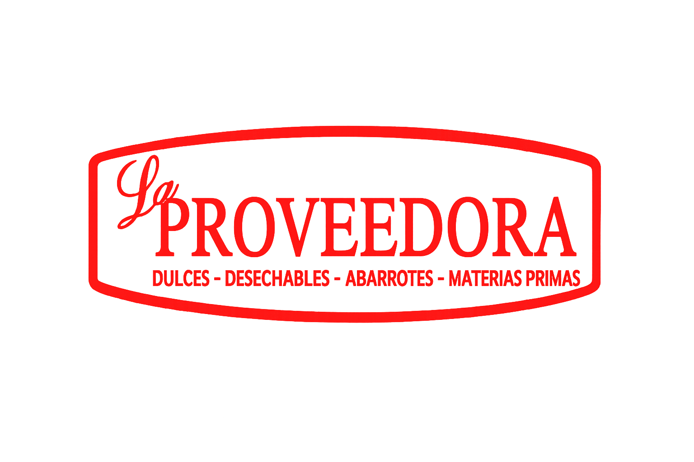

Menú Principal - Monitoreo
Salidas Zapata
Stock Zapata
Stock Cigarro
Monitoreo de Mermas
Visor Facturas Proveedora
Visor Articulos Proveedora
Salidas Dulces-Liquidos
Reporte Facturas x FOLIO Tecnopro